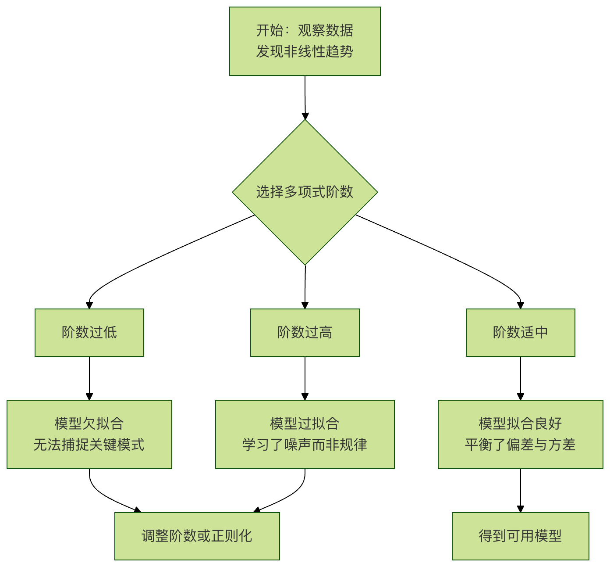

Regresión polinómica
Imagina que observas la trayectoria de un objeto cayendo desde el aire. Su velocidad de caída no es uniforme, sino que aumenta cada vez más. Si intentas ajustar esa trayectoria con una línea recta, el resultado será muy deficiente, porque una línea recta no puede describir ese cambio curvilíneo. En ese caso, necesitamos una línea que pueda curvarse: la regresión polinómica es una herramienta poderosa para resolver este tipo de problemas.
En términos simples,la regresión polinómicaes una extensión de la regresión lineal. Al agregar términos de mayor grado (como términos cuadráticos y cúbicos) a las características originales, mapea los datos a un espacio de mayor dimensión, permitiendo así usar una "curva" para ajustar las relaciones no lineales presentes en los datos.
1. Conceptos centrales: de la línea recta a la curva
1.1 Repaso de la regresión lineal
La fórmula del modelo de regresión lineal es muy sencilla:y = w₁ * x + bDonde:
yes el valor objetivo que queremos predecir.xes la característica de entrada.w₁es el peso (pendiente) de la característica.bes el término de sesgo (intersección).
Este modelo determina que solo puede trazar unalínea recta。
1.2 Introducción a la regresión polinómica
La idea central de la regresión polinómica es:tratar las potencias superiores de las características como nuevas características, y luego aplicar regresión lineal sobre ese conjunto de características expandido.
Por ejemplo, un modelo de regresión polinómica cuadrática:y = w₁ * x + w₂ * x² + b
Observa que, aunque en la ecuación aparecex², si consideramosxyx²como dos características independientesX1yX2, entonces el modelo se convierte en:y = w₁ * X1 + w₂ * X2 + bEsto sigue siendo esencialmente unmodelo lineal, solo que es con respecto alas características X1yX2lineal. Es por esto que se dice que la regresión polinómica es una "extensión de la regresión lineal".
1.3 Términos clave
- Grado / Orden: el exponente más alto en el polinomio. Grado 2 es una curva cuadrática (parábola), grado 3 es una curva cúbica, y así sucesivamente.
- Sobreajuste: si el grado elegido es demasiado alto, el modelo se vuelve muy "sinuoso", atraviesa perfectamente todos los puntos de datos de entrenamiento, pero su capacidad predictiva sobre datos nuevos cae drásticamente. Es como usar una red compleja para capturar unos pocos puntos: si la malla es demasiado fina, no se pueden atrapar los peces grandes.
- Subajuste: si el grado es demasiado bajo (por ejemplo, usar una línea recta para ajustar datos claramente curvos), el modelo no puede capturar los patrones fundamentales de los datos, y su capacidad predictiva también es muy deficiente.
El siguiente diagrama de flujo muestra el proceso de pensamiento típico al aplicar regresión polinómica:

2. Práctica: Implementación de regresión polinómica con Python
Usaremosscikit-learnesta poderosa biblioteca de aprendizaje automático, que hace que implementar la regresión polinómica sea muy sencillo.
2.1 Preparación del entorno y los datos
Primero, asegúrate de tener instaladas las bibliotecas necesarias y crea un conjunto de datos no lineales simulados.
Ejemplo
import numpy as np
import matplotlib.pyplot as plt
from sklearn.preprocessing import PolynomialFeatures
from sklearn.linear_model import LinearRegression
from sklearn.metrics import mean_squared_error, r2_score
# Establecer la semilla aleatoria para garantizar que los resultados sean consistentes en cada ejecución
np.random.seed(42)
# Crear datos simulados: y es una función cuadrática de x más algo de ruido aleatorio
X = 6 * np.random.rand(100, 1) - 3 # Generar 100 números aleatorios en el intervalo [-3, 3)
y = 0.5 * X**2 + X + 2 + np.random.randn(100, 1) # y = 0.5x² + x + 2 + ruido
# Visualizar datos sin procesar
plt.scatter(X, y, s=10, alpha=0.7, label='datos originales')
plt.xlabel('X')
plt.ylabel('y')
plt.title('Datos no lineales simulados')
plt.legend()
plt.show()
Al ejecutar este código, verás que los puntos de datos tienen una distribución aproximadamente en forma de "U" (parábola). Usar una línea recta para ajustarlos claramente no es adecuado.
2.2 Pasos clave: transformación de características y entrenamiento del modelo
El paso clave es usarPolynomialFeaturespara generar características de términos de mayor grado.
Ejemplo
# El parámetro degree determina el orden del polinomio; aquí probamos con orden 2
poly_features = PolynomialFeatures(degree=2, include_bias=False)
# Convertir la característica original X en una nueva matriz de características X_poly que contiene X y X^2
X_poly = poly_features.fit_transform(X)
print(fForma de la X original: {X.shape})
print(fLa forma de X_poly después de la transformación: {X_poly.shape})
print(fPrimeras 5 filas de datos X_poly:\n{X_poly[:5]}")
# La salida muestra que X_poly tiene dos columnas: la primera es X, la segunda es X^2.
# 2. Entrenar un modelo de regresión lineal sobre las características transformadas
lin_reg = LinearRegression()
lin_reg.fit(X_poly, y) # Usar X_poly en lugar de la X original
# 3. Ver los parámetros del modelo aprendido (pesos y sesgo)
print(f"\nParámetros del modelo (pesos w1, w2): {lin_reg.coef_.ravel()})
print(fSesgo del modelo (intercepto b): {lin_reg.intercept_})
# El resultado de salida debería aproximarse a los parámetros [1, 0.5] y 2 usados al generar los datos.
2.3 Visualización de los resultados del ajuste
Veamos cómo es el modelo de "curva" entrenado.
Ejemplo
X_new = np.linspace(-3, 3, 100).reshape(100, 1)
# Aplicar también la transformación de características polinómicas a este nuevo conjunto de puntos
X_new_poly = poly_features.transform(X_new)
# Hacer predicciones con el modelo
y_new = lin_reg.predict(X_new_poly)
# Comenzar a graficar
plt.scatter(X, y, s=10, alpha=0.7, label='datos de entrenamiento')
plt.plot(X_new, y_new, 'r-', linewidth=2, label=Ajuste de regresión polinomial (grado=2))
plt.xlabel('X')
plt.ylabel('y')
plt.title('Efecto del ajuste de regresión polinómica cuadrática')
plt.legend()
plt.show()
Deberías ver una bonita curva roja que captura muy bien la tendencia parabólica de los datos.
3. Tema importante: ¿Cómo elegir el grado correcto?
Elegir el grado es un proceso de equilibrio. Podemos tener una sensación intuitiva visualizando el efecto de ajuste con diferentes grados.
Ejemplo
degrees = [1, 2, 15]
plt.figure(figsize=(15, 4))
for i, degree in enumerate(degrees):
# Crear subplot
ax = plt.subplot(1, len(degrees), i + 1)
# Generar características polinómicas y entrenar el modelo
poly_features = PolynomialFeatures(degree=degree, include_bias=False)
X_poly = poly_features.fit_transform(X)
lin_reg = LinearRegression()
lin_reg.fit(X_poly, y)
# predecir y graficar
y_new = lin_reg.predict(poly_features.transform(X_new))
ax.scatter(X, y, s=10, alpha=0.7)
ax.plot(X_new, y_new, 'r-', linewidth=2)
ax.set_title(f'Degree = {degree}')
ax.set_xlabel('X')
ax.set_ylabel('y')
# Calcular y mostrar la puntuación R² (cuanto más cercano a 1, mejor)
y_pred = lin_reg.predict(X_poly)
r2 = r2_score(y, y_pred)
ax.text(0.05, 0.95, f'$R^2$ = {r2:.3f}', transform=ax.transAxes,
verticalalignment='top', bbox=dict(boxstyle='round', facecolor='wheat', alpha=0.5))
plt.tight_layout()
plt.show()
Observación e interpretación:
- Grado=1 (lineal): una línea recta,
R²puntuación baja, claramentesubajuste, no puede expresar la curvatura de los datos. - Grado=2 (cuadrática): una curva suave,
R²puntuación muy alta, el ajuste es muy bueno. - Grado=15 (grado quince): la curva oscila violentamente, pasa por muchos puntos de datos, pero predice de forma extraña la tendencia entre los puntos. En los datos de entrenamiento,
R²puede estar cerca de 1, pero la predicción sobre datos nuevos será muy mala, esto es un típicosobreajuste。
3.1 Un método más científico: validación cruzada
En la práctica, mediantevalidación cruzadaevaluamos el rendimiento de modelos con diferentes grados sobre datos desconocidos, y seleccionamos el modelo que mejor rendimiento tiene en el conjunto de validación.scikit-learndecross_val_scoreSe puede implementar fácilmente.
Ejemplo
# Probar una serie de órdenes
degrees_to_try = range(1, 11)
cv_scores = []
for degree in degrees_to_try:
poly_features = PolynomialFeatures(degree=degree, include_bias=False)
X_poly = poly_features.fit_transform(X)
lin_reg = LinearRegression()
# Usar validación cruzada de 5 pliegues, con error cuadrático medio negativo como puntuación (convención de sklearn: cuanto mayor, mejor, por lo que se usa MSE negativo)
scores = cross_val_score(lin_reg, X_poly, y, cv=5, scoring='neg_mean_squared_error')
cv_scores.append(-scores.mean()) # Tomar el promedio y volver al MSE positivo
# Encuentra el grado que minimiza el error de validación cruzada
best_degree = degrees_to_try[np.argmin(cv_scores)]
print(f"Según la validación cruzada, el mejor grado es: {best_degree}")
# Visualizar la variación del error de validación cruzada con el grado
plt.plot(degrees_to_try, cv_scores, 'bo-')
plt.xlabel('orden del polinomio')
plt.ylabel('MSE promedio de validación cruzada de 5 pliegues')
plt.title('La validación cruzada selecciona el mejor grado')
plt.axvline(x=best_degree, color='r', linestyle='--', label=fMejor grado={best_degree})
plt.legend()
plt.grid(True)
plt.show()
4. Ejercicios prácticos
Ahora es el momento de poner en práctica lo aprendido para consolidarlo.
Ejercicio 1: Diagnóstico y correcciónEjecuta el siguiente código. Intenta ajustar los datos con regresión polinómica, pero no funciona bien. Analiza cuál podría ser el problema y modifica el código para que realice el ajuste correctamente.
Ejemplo
import numpy as np
import matplotlib.pyplot as plt
from sklearn.preprocessing import PolynomialFeatures
from sklearn.linear_model import LinearRegression
X = np.array([1, 2, 3, 4, 5]).reshape(-1, 1)
y = np.array([2, 4, 9, 16, 25]) # Aproximadamente es y = x^2
# Intenta ajustar con un polinomio de grado 1 (lineal)
poly = PolynomialFeatures(degree=1)
X_poly = poly.fit_transform(X)
model = LinearRegression().fit(X_poly, y)
X_plot = np.linspace(1, 5, 100).reshape(-1, 1)
X_plot_poly = poly.transform(X_plot)
y_plot = model.predict(X_plot_poly)
plt.scatter(X, y, label='Data')
plt.plot(X_plot, y_plot, 'r-', label='Fit')
plt.legend()
plt.show()
Ejercicio 2: Exploración de un conjunto de datos realUsascikit-learnincluidoConjunto de datos de precios de viviendas de BostonoConjunto de datos de diabetes, seleccione una característica que presente una relación no lineal con el valor objetivo y aplique regresión polinómica.
- Trace un diagrama de dispersión de los datos originales.
- Pruebe diferentes grados (2, 3, 4) y visualice las curvas de ajuste.
- Utilice la validación cruzada para encontrar el grado polinómico que mejor predicción obtenga para esa característica.
Ejercicio 3: Desafío - Regresión polinómica multivariableNuestro ejemplo anterior solo tenía una característica.x. La regresión polinómica también se aplica a múltiples características. Por ejemplo, con dos característicasx1yx2cuando,degree=2las características polinómicas incluirían:x1, x2, x1², x1*x2, x2².(x1, x2)un conjunto de datos simulado de (por ejemplo,y = x1 + x2² + 噪声), y utilicePolynomialFeatures(degree=2)para realizar el ajuste. Observe la forma de la matriz de características generada y comprenda su significado.